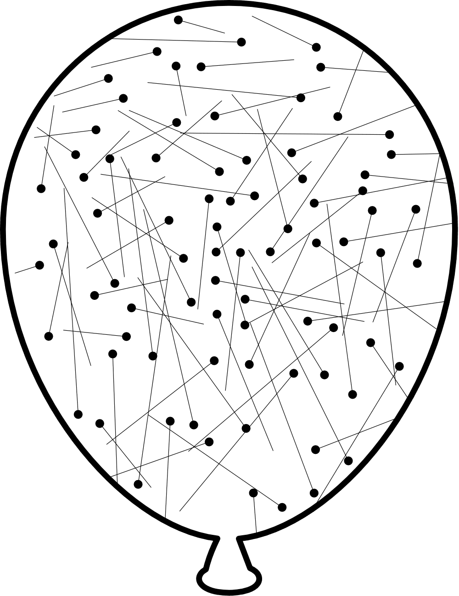

14 Les gaz parfaits
- Utiliser la théorie cinétique pour expliquer le comportement des gaz et la pression.
- Convertir les différentes unités de pression.
- Utilisez la loi des gaz parfaits pour calculer la pression, la température, le volume ou le nombre de moles d’un gaz parfait.
- Utilisez la loi des gaz parfaits dans les calculs stœchiométriques impliquant des réactifs ou des produits gazeux.
14.1 La théorie cinétique des gaz
Les gaz se comportent très différemment des liquides et des solides. Par exemple, les gaz ont une faible densité et sont compressibles. En revanche, les liquides et les solides sont beaucoup plus denses et beaucoup moins compressibles. De plus, les gaz subissent une expansion ou une contraction beaucoup plus importantes lors de changements de la température.
La théorie cinétique des gaz est un groupe d’hypothèses qui expliquent le comportement et les propriétés observables des gaz :
Les gaz sont formés de particules microscopiques. L’espace occupé par les particules est beaucoup plus petit que l’espace entre les particules. La majeure partie du volume occupé par un gaz est le vide.
Les particules se déplacent sans cesse en ligne droite dans toutes les directions.
Ces particules entrent sans cesse en collision et frappent les parois du récipient qui les renferme. Toutes les collisions se produisent sans perte d’énergie (collision élastique).
L’énergie cinétique moyenne des particules de gaz est proportionnelle à la température en Kelvin. Plus les particules bougent rapidement, plus leur énergie cinétique augmente, plus la température augmente.

Un gaz qui obéit à toutes les hypothèses de la théorie cinétique est appelé gaz parfait (ou idéal). Dans la pratique, il n’existe pas de gaz parfaitement idéal. Dans le cas de pressions très élevées, ou à des températures très basses, ces hypothèses ne sont plus vérifiées. Cependant, en règle générale, la plupart des gaz réels présentent un comportement presque idéal dans des conditions normales.
Un échantillon de gaz peut être caractérisé par quatre variables :
- le volume V,
- la température T,
- la pression P,
- et la quantité de matière n (nombre de moles).
Puisque la température et la pression varient d’un endroit à l’autre sur la planète, des conditions d’étude semblables sont nécessaires afin que les scientifiques puissent comparer leurs résultats et puissent établir des lois physiques. Les scientifiques ont dû établir des normes quant aux conditions d’étude des gaz. Un ensemble de conditions a donc été établi, les CNTP et les CATP :
| Température | Pression | |
|---|---|---|
| Conditions Normales de Température et Pression | 273.15 K | \(10^{5}\) Pa |
| Conditions Ambiantes de Température et Pression | 298.15 K | \(1\) bar |
Répondez aux questions suivantes sur la théorie cinétique des gaz.
- Pourquoi un gaz est-il beaucoup moins dense et beaucoup plus compressible qu’un solide ou un liquide ?
- À l’échelle microscopique, qu’est-ce qui provoque la pression exercée par un gaz sur les parois de son récipient ?
- À quelle grandeur l’énergie cinétique moyenne des particules d’un gaz est-elle proportionnelle ?
- Qu’appelle-t-on un « gaz parfait » ?
- Dans un gaz, les particules sont très éloignées les unes des autres (l’essentiel du volume est du vide), alors qu’elles sont serrées dans un solide ou un liquide. On peut donc facilement les rapprocher (compressibilité) et la masse par unité de volume est faible (faible densité).
- La pression provient des collisions incessantes des particules du gaz contre les parois du récipient.
- À la température absolue, exprimée en kelvin.
- Un gaz parfait est un gaz qui obéit à toutes les hypothèses de la théorie cinétique.
14.2 Les lois simples des gaz
Dans le cas de gaz parfaits, les lois simples des gaz mettent en relation deux variables qui décrivent les gaz alors que deux autres variables sont maintenues constantes.
\[ \begin{aligned} P1 \cdot V1 &= P2 \cdot V2 & \text{T et n constants (Loi de Boyle-Mariotte)} \\[1em] \frac{V1}{n1} &= \frac{V2}{n2} & \text{P et T constants (Loi d'Avogadro)} \\[1em] \frac{P1}{n1} &= \frac{P2}{n2} & \text{V et T constants (Loi 1 et loi 2 combinées)} \\[1em] \frac{V1}{T1} &= \frac{V2}{T2} & \text{P et n constants (Loi de Charles)} \\[1em] \frac{P1}{T1} &= \frac{P2}{T2} & \text{V et n constants (Loi de Gay-Lussac)} \end{aligned} \]
En combinant les lois simples des gaz, on peut établir une relation qui permet de comparer les variables après qu’un gaz ait subi des changements, en comparant une situation initiale (1) avec une situation finale (2).
\[ \frac{P_1 \cdot V_1}{T_1} = \frac{P_2 \cdot V_2}{T_2} \qquad \text{(loi générale des gaz)} \]
On remplit un ballon-sonde météorologique avec 500 l d’hélium à 25° C et une pression de 120 kPa. Le ballon s’élève à une altitude de 1850 m, où la pression est de 80 kPa et la température de 0° C. Quel sera le volume du ballon par rapport à son volume initial?
\[ \frac{P_1 \cdot V_1}{n_1 \cdot T_1} = \frac{P_2 \cdot V_2}{n_2 \cdot T_2} \]
\[ \begin{split} P_1 &= 120\ \text{ kPa}\\ V_1 &= 500\ \text{ l}\\ T_1 &= 298\ \text{ K}\\ n_1 &= n_2 \end{split} \qquad \begin{split} P_2 &= 80\ \text{ kPa}\\ V_2 &=\ ?\ \text{ l}\\ T_2 &= 273\ \text{ K}\\ n_2 &= n_1 \end{split} \]
\[ \begin{split} V_2 &= \frac{P_1 \cdot V_1 \cdot T_2}{T_1 \cdot P_2} \\ &= \frac{120\ \text{ kPa} \cdot 500\ \text{ l} \cdot 273\ \text{ K}}{298\ \text{ K} \cdot 80\ \text{ kPa}} \\ &= 687\ \text{ l} \end{split} \]
Un ballon, qui contient 18.2 g de diazote gazeux à 20° C occupe un volume de 16 l à une pression de 98.9 kPa. Quelle sera la pression si la température augmente à 50° C, que le volume diminue à 5 l et qu’on ajoute 12.8 g de dioxygène?
\[ \begin{split} P_1 &= 98.9\ \text{ kPa}\\ V_1 &= 16\ \text{ l}\\ T_1 &= 293\ \text{ K}\\ n_1 &= 0.65\ \text{ mol} \end{split} \qquad \begin{split} P_2 &= ?\ \text{ kPa}\\ V_2 &=\ 5\ \text{ l}\\ T_2 &= 323\ \text{ K}\\ n_2 &= 0.65 + 0.4\ \text{ mol}\\ &= 1.05\ \text{ mol} \end{split} \]
\[ \begin{split} \frac{P_1 \cdot V_1}{n_1 \cdot T_1} = \frac{P_2 \cdot V_2}{n_2 \cdot T_2} \end{split} \qquad \begin{split} \Rightarrow P_2 &= \frac{P_1 \cdot V_1 \cdot n_2 \cdot T_2}{n_1 \cdot T_1 \cdot V_2} \\ &= \frac{98.9\ \text{ kPa} \cdot 16\ \text{ l} \cdot 1.05\ \text{ mol} \cdot 323\ \text{ K}}{0.65\ \text{ mol} \cdot 293\ \text{ K} \cdot 5\ \text{ l}} \\ &= 563.58\ \text{ kPa} \end{split} \]
14.3 La loi des gaz parfaits
La loi générale des gaz permet de comparer les caractéristiques d’un gaz entre une situation initiale et une situation finale. Toutefois, cette formule n’est pas utile lorsqu’on veut déterminer les caractéristiques d’un gaz à un moment précis. La loi des gaz parfaits combine les lois simples des gaz en une seule expression.
\[ P \cdot V = n \cdot R \cdot T \]
- P : pression en \(\ \mathrm{Pa}\)
- V : volume en \(\ \mathrm{m^3}\)
- n : quantité de matière en \(\ \mathrm{mol}\)
- T : température absolue en \(\ \mathrm{K}\)
- R = 8.314 \(\ \mathrm{\frac{J}{mol \cdot K}}\) (constante des gaz parfaits)
Avec cette relation, nous pouvons convertir le volume d’un gaz en quantité de matière en connaissant la pression et le température. Le volume, la pression et la température d’un gaz sont plus faciles à mesurer que la masse, et la masse molaire du gaz n’intervient pas.
- Calculez le volume d’une mole de gaz aux CNTP.
- Calculez le volume d’une mole de gaz aux conditions de température et de pression à l’endroit où vous vous trouvez.
- On cherche à déterminer la valeur de la constante des gaz parfaits. Pour ce faire, à une température de 16° C et une pression de 748 mmHg, on mesure que \(5.164 \cdot 10^{-2}\) mol d’un gaz occupent un volume de 1245 mL. Calculez quelle est la valeur de la constante et indiquez de quel gaz il s’agit.
\[ \begin{split} P \cdot V = n \cdot R \cdot T \end{split} \qquad \begin{split} \Rightarrow V &= \frac{n \cdot R \cdot T}{P} \\ &= \frac{1\ \text{ mol} \cdot 8.314 \ \mathrm{\frac{J}{mol \cdot K}} \cdot 273\ \text{ K}}{1.013 \cdot 10^{5}\ \text{ Pa}} \\ &= 0.0224\ \text{ m}^3 = 22.4\ \text{ l} \end{split} \]
\[ \begin{split} \Rightarrow V &= \frac{n \cdot R \cdot T}{P} = \frac{1\ \text{ mol} \cdot 8.314 \ \mathrm{\frac{J}{mol \cdot K}} \cdot 292\ \text{ K}}{1.013 \cdot 10^{5}\ \text{ Pa}} \\ &= 0.0239\ \text{ m}^3 = 23.9\ \text{ l} \end{split} \]
\[ \begin{split} 748\ \text{ mmHg} &= 9.973 \cdot 10^{4}\ \text{ Pa}\\[0.33em] 1245\ mL &= 1.245 \cdot 10^{-3}\ \text{ m}^3\\[0.33em] 16°\ C\ &= 289.15\ \text{ K}\\ \end{split} \qquad \begin{split} R = \frac{P \cdot V}{n \cdot T} &= \frac{9.973 \cdot 10^{4}\ \text{ Pa} \cdot 1.245 \cdot 10^{-3}\ \text{ m}^3}{5.164 \cdot 10^{-2}\ \text{ mol} \cdot 289.15\ \text{ K}}\\[0.33em] &= 8.315 \cong 8.314 \ \mathrm{\frac{J}{mol \cdot K}} \end{split} \]
14.3.1 Les unités des gaz
14.3.1.1 Le volume
L’unité SI de volume est le mètre cube \(m^3\). Depuis 1964, le mot “litre” \(\text{ l}\) peut être utilisé . Bien qu’en dehors du système international (SI) d’unités, le litre est couramment utilisé pour caractériser un volume.
\[ \begin{split} 1\ \mathrm{m^3} = 1000\ \mathrm{dm^3} = 1000\ \mathrm{l} \end{split} \qquad\qquad \begin{split} 1\ \mathrm{l} = 1\ \mathrm{dm^3} = 10^{-3}\ \mathrm{m^3} \end{split} \]
14.3.1.2 La température
Le kelvin est l’unité SI de la température thermodynamique. Le degré Celsius est également utilisé et peut exprimer une différence de température, mais lorsque l’on exprime une température absolue, on utilisera le kelvin.
\[ T_{{\mathrm{Kelvin}}}=T_{{\mathrm {Celsius}}} + 273.15 \]
14.3.1.3 La pression
Le “pascal” (symbole Pa) est l’unité de pression définie par la 14e Conférence Générale des Poids et Mesures de 1971. Le “pascal” est exprimé comme une force d’un newton exercée sur une surface d’un mètre carré ou comme un kilogramme par mètre par seconde carré (unités SI).
\[ 1\ \mathrm{Pa} = 1\ \mathrm{\frac{N}{m^2}} = 1\ \mathrm{\frac{kg}{m \cdot s^2}} \]
Il existe de multiples unités de pression en dehors du système international :
\[ 1.013 \cdot 10^{5}\ \mathrm{Pa} = 1 \ \mathrm{atm} = 1.013 \ \mathrm{bar} = 760 \ \mathrm{mmHg} \]
On rappelle les équivalences : \(1\) atm \(= 1.013\cdot10^5\) Pa \(= 1.013\) bar \(= 760\) mmHg.
- Convertissez 2.0 atm en pascals, puis en bars.
- Convertissez 380 mmHg en atmosphères.
- Convertissez 202.6 kPa en atmosphères.
- \(2.0 \text{ atm} = 2.0 \cdot 1.013\cdot10^5 = 2.03\cdot10^5 \text{ Pa}\) ; \(2.0 \text{ atm} = 2.0 \cdot 1.013 = 2.03 \text{ bar}\).
- \(380 \text{ mmHg} = \dfrac{380}{760} = 0.50 \text{ atm}\).
- \(202.6 \text{ kPa} = 202.6\cdot10^3 \text{ Pa}\), donc \(\dfrac{202.6\cdot10^3}{1.013\cdot10^5} = 2.0 \text{ atm}\).
14.4 La loi des pressions partielles
Jusqu’à maintenant, nous n’avons traité que des substances gazeuses pures. Cependant, on est souvent amené à étudier des mélanges de gaz. Nous respirons un air qui est composé de 4/5 de diazote (N2) et de 1/5 de dioxygène (O2). Le diazote est responsable pour 4/5 de la pression atmosphérique que nous subissons et le dioxygène en est responsable pour 1/5. Il en est de même pour la pression dans les pneus de votre vélo.
Dans le cas d’un mélange de gaz, la loi des pressions partielles nous permet de connaître la relation entre la pression totale et la pression partielle de chaque gaz constituant le mélange.
Selon cette loi :
La pression totale d’un mélange de gaz est égale à la somme des pressions partielles de chaque gaz constituant le mélange.
Soit deux gaz, A et B, contenus dans un volume V. La pression totale \(P_T\) est le résultat des collisions des deux types de molécules sur la paroi du contenant. Les collisions entre les molécules de gaz sont négligeables par rapport aux collisions des molécules avec la paroi du contenant. Chaque gaz exerce une pression partielle indépendante en fonction de sa concentration et de sa température dans le mélange.
La loi des gaz parfaits nous permet de connaître la pression exercée par chaque gaz :
\[ \begin{split} P_A = \frac{n_A \cdot RT }{V} \end{split} \qquad\text{et}\qquad \begin{split} P_B = \frac{n_B \cdot RT }{V} \end{split} \]
La pression totale d’un mélange de gaz est donnée par la relation suivante :
\[ P_T = P_A + P_B + P_C + ... \]
Dans notre mélange, A et B :
\[ \begin{split} P_T = P_A + P_B \end{split} \qquad\qquad \begin{split} P_T &= \frac{n_A \cdot RT }{V} + \frac{n_B \cdot RT }{V} \\ &= \frac{RT }{V} \cdot (n_A + n_B) \end{split} \]
Un mélange de gaz rares contient 4.46 mol de néon, 0.74 mol d’argon et 2.15 mol de xénon. Calculez les pressions partielles de chaque gaz si la pression totale est de 200 kPa à une température donnée.
\[ \begin{split} \chi_{Ne} &= \frac{n_{Ne}}{n_{Ne}+n_{Ar}+n_{Xe}} = \frac{4.46}{4.46+0.74+2.15} = 0.61 \\ \chi_{Ar} &= \frac{n_{Ar}}{n_{Ne}+n_{Ar}+n_{Xe}} = \frac{0.74}{4.46+0.74+2.15} = 0.1 \\ \chi_{Xe} &= \frac{n_{Xe}}{n_{Ne}+n_{Ar}+n_{Xe}} = \frac{2.15}{4.46+0.74+2.15} = 0.29\\ \end{split} \qquad \begin{split} P_{Ne} &= 0.61 \cdot 200\ \text{ kPa} = 122\ \text{ kPa} \\ P_{Ar} &= 0.1 \cdot 200\ \text{ kPa} = 20\ \text{ kPa} \\ P_{Xe} &= 0.29 \cdot 200\ \text{ kPa} = 58\ \text{ kPa} \\ \end{split} \]
14.5 Résumé
- La théorie cinétique décrit un gaz comme un ensemble de particules microscopiques très espacées, en mouvement rectiligne incessant et en collisions élastiques. La pression d’un gaz résulte des collisions de ses particules contre les parois ; leur énergie cinétique moyenne est proportionnelle à la température absolue (en kelvin). Un gaz parfait obéit à toutes ces hypothèses.
- Un gaz est caractérisé par quatre variables : le volume \(V\), la température \(T\) (en kelvin), la pression \(P\) et la quantité de matière \(n\). Les conditions de référence sont les CNTP (273.15 K, \(10^5\) Pa) et les CATP (298.15 K, 1 bar).
- La pression se mesure en pascals ; équivalences : \(1.013\cdot10^5\) Pa = 1 atm = 1.013 bar = 760 mmHg.
- Les lois simples relient deux variables. La loi des gaz parfaits \(P \cdot V = n \cdot R \cdot T\) relie les quatre variables dans des conditions donnés.
- La pression totale d’un mélange gazeux est la somme des pressions partielles de ses constituants ; la pression partielle d’un gaz est proportionnelle à sa fraction molaire.
- La loi des gaz parfaits relie un volume gazeux à une quantité de matière : elle intervient dans les calculs stœchiométriques faisant appel à des réactifs ou produits gazeux.
14.6 Exercices supplémentaires
Les pneus d’une voiture ont été gonflés à 1.7 atm à une température de 10° C. Quelle sera la pression de ces pneus à 35° C et à -10° C ?
\[ \begin{split} \text{V et } & \text{n constants}\\ \frac{P1}{T1} &= \frac{P2}{T2} \\ \Rightarrow P2 &= \frac{P1 \cdot T2}{T1} \end{split} \qquad\qquad \begin{split} P_{35°\ C} &= \frac{1.7\ \text{ atm} \cdot 308.15\ \text{ K}}{283.15\ \text{ K}} = 1.85\ \text{ atm} \\[1em] P_{-10°\ C} &= \frac{1.7\ \text{ atm} \cdot 263.15\ \text{ K}}{283.15\ \text{ K}} = 1.58\ \text{ atm} \end{split} \]
Quelle est la masse d’un litre d’ammoniac (NH3) aux CNTP ?
\[ \begin{split} P \cdot V &= n \cdot R \cdot T \\ \Rightarrow n &= \frac{P \cdot V}{R \cdot T} \end{split} \qquad \begin{split} n_{\ce{NH3}} &= \frac{1.013 \cdot 10^{5}\ \text{ Pa} \cdot 10^{-3}\ \text{ m}^3}{8.314 \ \mathrm{\frac{J}{mol \cdot K}} \cdot 273.15\ \text{ K}} = 0.045\ \text{ mol} \\[1em] m_{\ce{NH3}} &= n_{\ce{NH3}} \cdot M_{\ce{NH3}} = 0.045\ \text{ mol} \cdot 17.034\ \mathrm{\frac{g}{mol}} = 0.767\ \text{ g} \end{split} \]
Un bon vide obtenu dans un appareil de laboratoire correspond à 10-6 mmHg de pression à 25° C. Calculer le nombre de molécules de gaz par cm3 dans ces conditions.
\[ \begin{split} P \cdot V &= n \cdot R \cdot T \\ \Rightarrow n &= \frac{P \cdot V}{R \cdot T} \end{split} \]
\[ \begin{split} P &= 10^{-6}\ \text{ mmHg} = 1.333 \cdot 10^{-4}\ \text{ Pa} \\ T &= 25°\ C = 298.15\ \text{ K} \\ V &= 1\ \text{ m}^3 \text{ (arbitrairement)} \end{split} \qquad \begin{split} n_{\ce{gaz}} &= \frac{1.333 \cdot 10^{-4}\ \text{ Pa} \cdot 1\ \text{ m}^3}{8.314 \ \mathrm{\frac{J}{mol \cdot K}} \cdot 298.15\ \text{ K}} \\[1em] & = 5.378 \cdot 10^{-8}\ \text{ mol} \end{split} \]
\[ \begin{split} \Rightarrow\ & 5.378 \cdot 10^{-8}\ \text{ mol} \text{ de gaz dans 1 $m^3$} \\ =\ & 3.238 \cdot 10^{16} \text{ \textit{molécules} dans 1 $m^3$} \\ =\ & 3.238 \cdot 10^{10} \text{ \textit{molécules} dans 1 $cm^3$} \\ & \text{plus de 32 milliards de molécules dans 1 $cm^3$} \end{split} \]
Près du niveau de la mer, l’air sec a la composition suivante par unité de volume:
- \(\ce{N2}\) : 78.08 %
- \(\ce{O2}\) : 20.94 %
- \(\ce{Ar}\) : 0.93 %
- \(\ce{CO2}\) : 0.05 %
La pression atmosphérique est de 101.3 kPa. Calculez :
- La pression partielle de chaque gaz;
- La concentration de chaque gaz en moles par litre à 0°C et à pression atmosphérique.
- \[ \begin{split} P_{\ce{N2}} &= 0.7808 \cdot 101.3\ \text{ kPa} = 79.1\ \text{ kPa} \\ P_{\ce{O2}} &= 0.2094 \cdot 101.3\ \text{ kPa} = 21.2\ \text{ kPa} \\ P_{\ce{Ar}} &= 0.0093 \cdot 101.3\ \text{ kPa} = 0.94\ \text{ kPa} \\ P_{\ce{CO2}} &= 0.0005 \cdot 101.3\ \text{ kPa} = 0.051\ \text{ kPa} \end{split} \]
- 0°C et pression atmosphérique (=CNTP), 1 mole de gaz occupe 22.4 litres.
\[ \begin{split} 22.4\ \text{ L/mol} \Rightarrow \frac{1}{22.4}\ \text{ mol/L} = 0.045\ \text{ mol/L} \end{split} \]
\[ \begin{split} C_{\ce{N2}} &= 0.7808 \cdot 0.045\ \text{ mol/L} = 3.5 \cdot 10^{-2}\ \text{ mol/L} \\ C_{\ce{O2}} &= 0.2094 \cdot 0.045\ \text{ mol/L} = 9 \cdot 10^{-3}\ \text{ mol/L} \\ C_{\ce{Ar}} &= 0.0093 \cdot 0.045\ \text{ mol/L} = 4 \cdot 10^{-4}\ \text{ mol/L} \\ C_{\ce{CO2}} &= 0.0005 \cdot 0.045\ \text{ mol/L} = 2.25 \cdot 10^{-5}\ \text{ mol/L} \end{split} \]
Le carbonate de calcium se décompose selon \(\ce{CaCO3 -> CaO + CO2}\). On chauffe 50.0 g de carbonate de calcium. Données : M(CaCO₃) = 100.09 g/mol ; R = 8.314 J·mol\(^{-1}\)·K\(^{-1}\).
- Combien de moles de \(\ce{CO2}\) se forment ?
- Quel volume ce dioxyde de carbone occupe-t-il à 273.15 K sous une pression de \(10^5\) Pa ?
- \[ n_{\ce{CaCO3}} = \frac{m}{M} = \frac{50.0}{100.09} = 0.500 \text{ mol} \] La réaction se fait dans le rapport 1:1, donc \(n_{\ce{CO2}} = 0.500\) mol.
- \[ V = \frac{n \cdot R \cdot T}{P} = \frac{0.500 \cdot 8.314 \cdot 273.15}{10^5} = 0.01135 \text{ m}^3 = 11.35 \text{ l} \]
Le zinc réagit avec l’acide chlorhydrique selon \(\ce{Zn + 2HCl -> ZnCl2 + H2}\). On fait réagir 6.54 g de zinc. Données : M(Zn) = 65.38 g/mol ; R = 8.314 J·mol\(^{-1}\)·K\(^{-1}\).
Quel volume de dihydrogène obtient-on à 25°C (298.15 K) sous une pression de \(1.0\cdot10^5\) Pa ?
\[ n_{\ce{Zn}} = \frac{m}{M} = \frac{6.54}{65.38} = 0.100 \text{ mol} \] La réaction se fait dans le rapport \(\ce{Zn} : \ce{H2} = 1:1\), donc \(n_{\ce{H2}} = 0.100\) mol. \[ V = \frac{n \cdot R \cdot T}{P} = \frac{0.100 \cdot 8.314 \cdot 298.15}{1.0\cdot10^5} = 2.48\cdot10^{-3} \text{ m}^3 = 2.48 \text{ l} \]
La combustion complète du méthane suit \(\ce{CH4 + 2O2 -> CO2 + 2H2O}\). On brûle 16.0 g de méthane. Données : M(CH₄) = 16.04 g/mol ; R = 8.314 J·mol\(^{-1}\)·K\(^{-1}\).
Quel volume de dioxygène, mesuré à 25°C (298.15 K) sous \(1.0\cdot10^5\) Pa, est nécessaire à cette combustion ?
\[ n_{\ce{CH4}} = \frac{m}{M} = \frac{16.0}{16.04} = 1.00 \text{ mol} \] La réaction se fait dans le rapport \(\ce{CH4} : \ce{O2} = 1:2\), donc \(n_{\ce{O2}} = 2.00\) mol. \[ V = \frac{n \cdot R \cdot T}{P} = \frac{2.00 \cdot 8.314 \cdot 298.15}{1.0\cdot10^5} = 4.96\cdot10^{-2} \text{ m}^3 = 49.6 \text{ l} \]